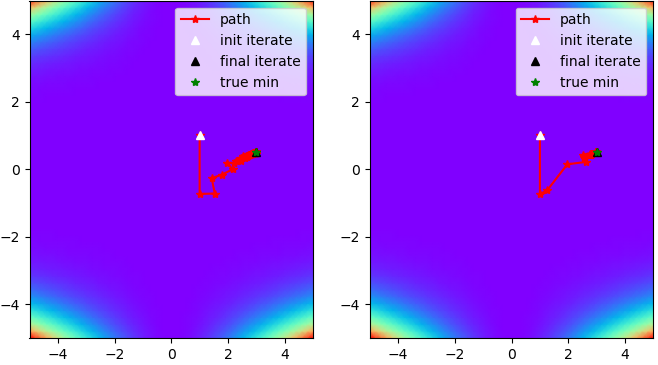

Quasi Cauchy Optimizer
This article contains some notes about the
quasi cauchy optimizer implementation.
The method minimizes a function \(f(x)\) which maps an n-vector \(x\) to a scalar.
So \(f(x)\) could be some typical loss function used in machine learning algorithms.
A diagonal matrix is used to approximate the Hessian, which has the same memory-footprint as a vector.
This makes the method usable for high-dimensional problems (e.g.
neural networks).
Weak Secant Equation
The weak secant equation is \(s^{T} \cdot y= s^{T} \cdot B_{+} \cdot s\) with the update step \(s=x_{+}-x\),
the gradient difference \(y=\nabla f(x_{+})-\nabla f(x)\) and \(s^{T} \cdot y \gt 0\).
The \(n \times n\) matrix \(B_{+}\) is an approximation of the Hessian of \(f(x)\) which satisfies the weak secant equation.
Like in Newton's method, the update step is \(s=-B^{-1} \cdot \nabla f(x)\) where the steepest-descent direction \(-\nabla f(x)\) is scaled and rotated by \(B^{-1}\).
For more details see the paper of
Zhu et al.
Scaled Identity Update
We can use a scaled identity matrix \(D=d \cdot I\) for the Hessian approximation \(B_{+}\).
Inserting into the weak secant equation, this gives \(s^{T} \cdot y= s^{T} \cdot d \cdot I \cdot s\).
Solving for the scalar \(d\) we get \(d=\frac{s^{T} \cdot y}{s^{T} \cdot s}\).
This Hessian approximation uniformly scales all steepest-descent dimensions by \(\frac{1}{d}\) in the update step.
Diagonal Update
Instead of the scaled identity matrix, we can also use a diagonal matrix \(D\) for the Hessian approximation.
There is not a unique solution for a diagonal matrix, so we narrow down the solution \(D_{+}\) to be the one most similar to the previous matrix \(D\).
The similarity is measured as:
\[\| D_{+}-D \| = \| U \| = \sqrt{\sum_{i}{u_{ii}^2}} \]
By taking the smallest possible update \(U\), this keeps as much information as possible from previous iterations.
This gives the optimization problem \(min \| U \| \) with the weak secant equation \(s^T \cdot (D+U) \cdot s = s^T \cdot y\) as constraint.
The Lagrange function is:
\[L(U, \lambda) = \frac{1}{2} \cdot \| U \|^2 + \lambda \cdot (s^T \cdot (D+U) \cdot s - s^T \cdot y) \]
Computing the partial derivatives with respect to the diagonal elements \(u_{ii}\) and \(\lambda\) and setting them to zero gives the update:
\[u_{ii} = \frac{s^T \cdot y - s^T \cdot D \cdot s}{\sum_{j}{s_j^4}} \cdot s_i^2\]
This Hessian approximation scales each steepest-descent dimension individually by \(\frac{1}{u_{ii}}\) in the update step.
Experiments
The results can be reproduced with the
quasi cauchy optimizer implementation.
The implementation uses line-search.
Further, it clips the Hessian approximation to positive values as a crude way to ensure moving along a descent direction.
Here only a small subset of the results is shown.
Comparing the diagonal update and the scaled identity update on multiple test-functions shows the following:
- The typical test-functions (Beale, Rosenbrock, ...) have a low number of dimensions, and for these functions the scaled identity update performs better (see Fig. 1 and Table 1)
- For high-dimensional functions with scale varying across dimensions, the diagonal update performs better (see Table 2)

Fig. 1: Path towards the minimum of the Beale test-function. Left: diagonal update. Right: scaled identity update.
| Update |
Error |
Iteration Count |
| Diagonal |
0.000 |
172 |
| Scaled Identity |
0.000 |
33 |
Table 1: Beale test function.
| Update |
Error |
Iteration Count |
| Diagonal |
0.383 |
185 |
| Scaled Identity |
0.649 |
501 (max. reached) |
Table 2: 50-dimensional polynomial.
Conclusion
The diagonal update derived from the weak secant equation scales each steepest descent dimension separately.
This update performs better for high-dimensional functions with scale varying across dimensions.
Otherwise, uniform scaling performs better.
Harald Scheidl, 2020